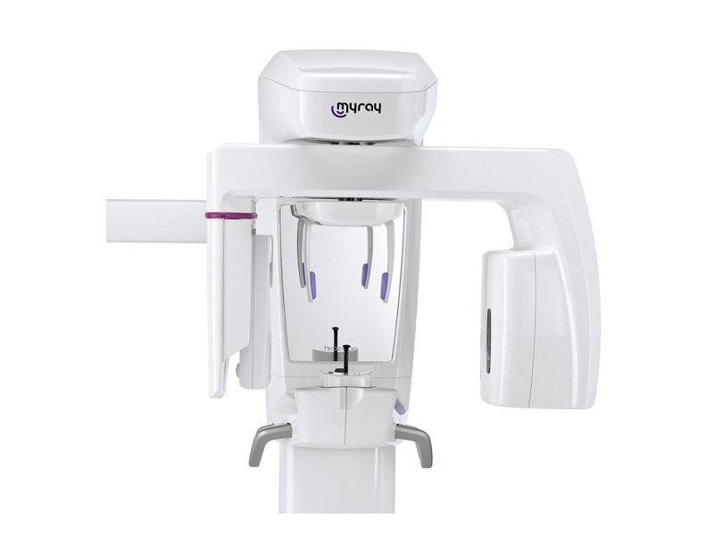

CBCT
MYRAY 3D CBCT
- Machine
- MYRAY 3D CBCT (Cone Beam Computed Tomography)
- Purpose
- Detailed three-dimensional imaging of the teeth, jaws and surrounding structures.
- About this equipment
- A CBCT scanner rotates around the head to capture many images, which are combined by a computer into a 3D view that the dentist or doctor can examine from different angles. It is requested when a conventional dental X-ray or a panoramic X-ray does not give enough information, for example when planning dental implants or assessing impacted teeth. Your dentist or doctor decides whether a CBCT scan is needed.